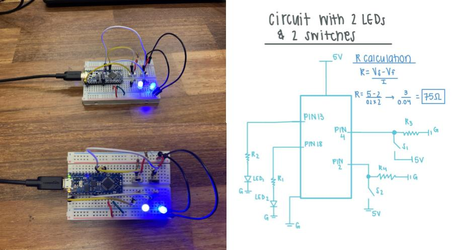

Check out the code I used for this part of the lab:
Part 2: Digital I/O with a programmable LED strip
In this part of the lab, I learned how to solder and got to test my abilities for the first time. The breadboard and circuit for this part remained the same except I replaced the LEDs with the programmable LED strip.
As you can see in the video, the code for this portion of the lab sends the LED commands in almost a blinking motion, and lighting up the consequtive LEDS in order!
In the photo to the right, I show my final breadboard as well as my solding process of the programmable LED strip. The middle solder image is my initial soldering and the bottom image shows the soldering after I applied hot glue to make sure everything stays in tact.
Below my schematic and photographs, find the code used for the programmable LED!

Lab Part 1: Digital I/O with LEDs
Before getting too fancy, I built a circuit with 2 digital inputs (my switches) that allowed a unique output when connecting the 2 LEDs. With this, programming my microcontroller allowed for each input to have a specialized output.
To calculate the limiting resistor for mt LED, I used the formula: R=Vs - Vf/If
Vs being the supply voltage, Vf the forward voltage, and If the forward current of the LED. The result, R, is the resistor value used with my LEDs.
Part 3: Soldered Breakout Boards
In the third and final part of this lab, I learned about breakout boards and even got to solder my own! A breakout board is used to take a single electrical part of an electrical circuit and filter it into a PCB. In my breakout board (which you can see to the left), I used a digital output (the red LEDs) as well as resistors to maintain the proper value. (For this portion of the lab, I hoped to use 100 ohm resistors but had to use slightly higher due to shortage, thus resulting in a duller LED light).
As you can see, the breakout board has two wires coming from it - signal and ground. Check out the video to see the board in action!